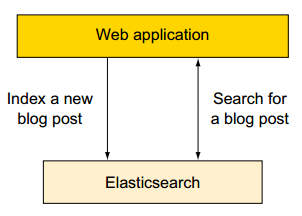

了解了ES的使用场景，ES的研究、使用、推广才更有价值和意义。
1、场景—：使用Elasticsearch作为主要的后端
传统项目中，搜索引擎是部署在成熟的数据存储的顶部，以提供快速且相关的搜索能力。这是因为早期的搜索引擎不能提供耐用的存储或其他经常需要的功能，如统计。

Elasticsearch是提供持久存储、统计等多项功能的现代搜索引擎。
如果你开始一个新项目，我们建议您考虑使用Elasticsearch作为唯一的数据存储，以帮助保持你的设计尽可能简单。
此种场景不支持包含频繁更新、事务（transaction）的操作。
举例如下：新建一个博客系统使用es作为存储。
1）我们可以向ES提交新的博文；
2）使用ES检索、搜索、统计数据。
ES作为存储的优势：
如果一台服务器出现故障时会发生什么？你可以通过复制 数据到不同的服务器以达到容错的目的。
注意：
整体架构设计时，需要我们权衡是否有必要增加额外的存储。
2、场景二：在现有系统中增加elasticsearch
由于ES不能提供存储的所有功能，一些场景下需要在现有系统数据存储的基础上新增ES支持。

举例1：ES不支持事务、复杂的关系（至少1.X版本不支持，2.X有改善，但支持的仍然不好），如果你的系统中需要上述特征的支持，需要考虑在原有架构、原有存储的基础上的新增ES的支持。
举例2：如果你已经有一个在运行的复杂的系统，你的需求之一是在现有系统中添加检索服务。一种非常冒险的方式是重构系统以支持ES。而相对安全的方式是：将ES作为新的组件添加到现有系统中。
如果你使用了如下图所示的SQL数据库和ES存储，你需要找到一种方式使得两存储之间实时同步。需要根据数据的组成、数据库选择对应的同步插件。可供选择的插件包括：
1）mysql、oracle选择 logstash-input-jdbc 插件。
2）mongo选择 mongo-connector工具。
假设你的在线零售商店的产品信息存储在SQL数据库中。 为了快速且相关的搜索，你安装Elasticsearch。
为了索引数据，您需要部署一个同步机制，该同步机制可以是Elasticsearch插件或你建立一个自定义的服务。此同步机制可以将对应于每个产品的所有数据和索引都存储在Elasticsearch，每个产品作为一个document存储（这里的document相当于关系型数据库中的一行/row数据）。
当在该网页上的搜索条件中输入“用户的类型”，店面网络应用程序通过Elasticsearch查询该信息。 Elasticsearch返回符合标准的产品documents，并根据你喜欢的方式来分类文档。 排序可以根据每个产品的被搜索次数所得到的相关分数，或任何存储在产品document信息，例如：最新最近加入的产品、平均得分，或者是那些插入或更新信息。 所以你可以只使用Elasticsearch处理搜索。这取决于同步机制来保持Elasticsearch获取最新变化。
3、场景三：使用elasticsearch和现有的工具
在一些使用情况下，您不必写一行代码就能通过elasticssearch完成一项工作。很多工具都可以与Elasticsearch一起工作，所以你不必到你从头开始编写。
例如，假设要部署一个大规模的日志框架存储，搜索，并分析了大量的事件。
如图下图，处理日志和输出到Elasticsearch，您可以使用日志记录工具，如rsyslog（www.rsyslog.com），Logstash（www.elastic.co/products/logstash），或Apache Flume（http://flume.apache.org）。
搜索和可视化界面分析这些日志，你可以使用Kibana（www.elastic.co/产品/ kibana）。

为什么那么多工具适配Elasticsearch？主要原因如下：
1）Elasticsearch是开源的。
2）Elasticsearch提供了JAVA API接口。
3）Elasticsearch提供了RESTful API接口（不管程序用什么语言开发，任何程序都可以访问）
4）更重要的是，REST请求和应答是典型的JSON（JavaScript对象 符号）格式。通常情况下，一个REST请求包含一个JSON文件，其回复都 也是一个JSON文件。